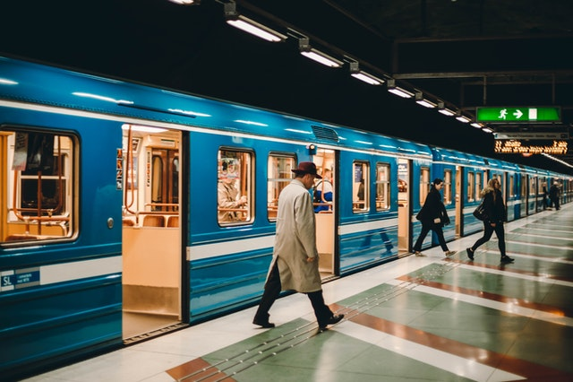
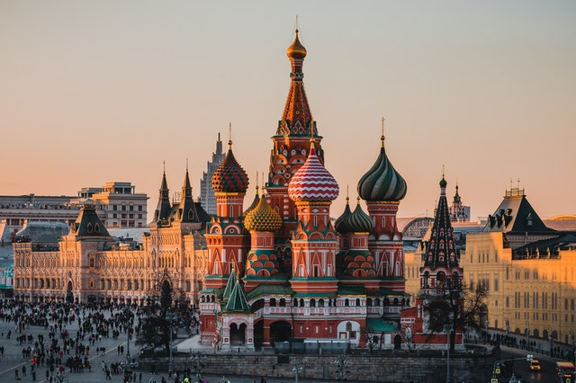
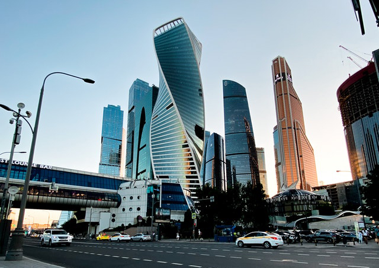
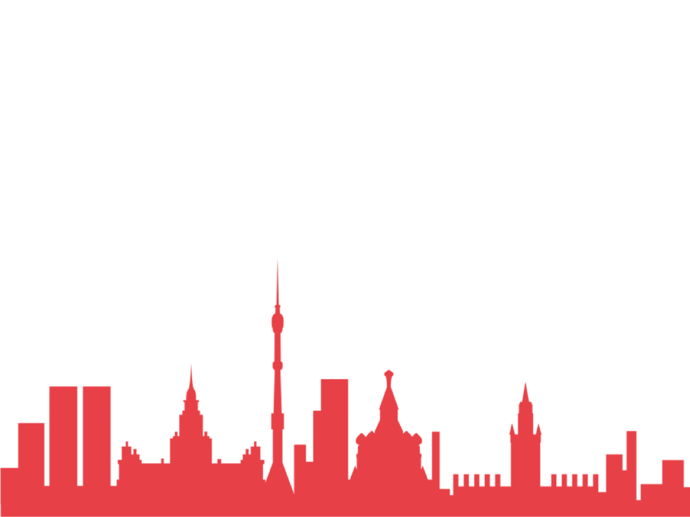

Historical facts
Moscow hasn’t always been the capital of Russia.When it was first mentioned in historical records around 1147, it was nothing more than a tiny town of little importance. Muscovites today consider Prince Yury Dolgoruky their city’s founding father, but it was only recorded that he dined with friends in the town of “Moskov,” named after the local Moscow River. It remains unclear exactly when this town was established, but at the time of Dolgoruky it was governed by a noble called Kuchka, who fell out with the prince over taxes and was sentenced to death. Moscow’s location on the banks of the Moscow River was an important one, as the river connected both the Oka and Volga rivers. Its important strategic position and rapid population growth resulted in Daniil Alexandrovich becoming the first Moscow prince of the newly founded state of Muscovy. He founded a local dynasty which first ruled the Moscow princedom and then all of Russia. He was the forefather of all the Moscow grand dukes. In 1712-14 Peter the Great moved the capital to the newly established St. Petersburg in the north. However, Moscow was where the Russian emperors continued to be crowned, so the city did not completely lose its capital status. After the 1917 October Revolution, the Bolsheviks decided to move the capital back to Moscow and in 1918, Moscow became the capital of the Soviet Union. Moscow became a thriving megalopolis during the Soviet era and today is one of the largest cities in Europe. The Moscow metro system was built — one of the most efficient and beautiful underground networks in the world. After the Soviet Union collapsed in 1991, Moscow continued to serve as the capital,this time of a new entity, the Russian Federation. Today Moscow is an extremely diverse city, where ancient neighborhoods are interspersed with newly built high-rises, inhabited by people from all over the former Soviet Union.
City Events
Places to see
Moscow Metro
The Moscow metro opened in 1935, the length of the lines is 346 kilometers. And this is one of the busiest subways in the world: every year the metropolitan subway carries about 2.5 billion people. The main feature of the Moscow subway is that it is one of the city's main attractions: it has some of the most beautiful stations in the world. The metro is often referred to as "underground palaces", and many tourists come down here to look at the paintings on the walls and graceful chandeliers hanging from the ceilings. Among the most beautiful stations are Ploschad Revolyutsii, Mayakovskaya, Teatralnaya, Kievskaya and others.
Red Square
Red Square is an old city square, located under the walls of the Kremlin on the historical territory of Kitay-gorod and has earned the fame of the main square of Moscow. Possessing a unique architectural ensemble, Red Square has become one of the key attractions of the capital and, together with the Moscow Kremlin, was included in the list of UNESCO World Heritage Sites. The square has access to a number of other city attractions: Zaryadye Park, Aleksandrovsky Garden, pedestrian Nikolskaya Street, Birzhevaya Square, being the center of tourist routes.
Moscow City
Moscow City is a business center that has become a point of attraction not only for office workers, but also for thousands of tourists. Here the atmosphere of working days and an eternal holiday is intertwined with excursions, show programs and the feeling of flying over the capital. Moscow is accustomed to surprising its guests with the beauty of architecture and a variety of cultural programs. With the emergence of a new business center, one more attraction has been added to the numerous attractions - the “city of the future”. For tourists, skyscrapers provide an excellent opportunity to see the panorama from a bird's eye view. There is an observation deck in almost every tower. Here you can see all of Moscow from a bird's eye view!
See how many more interesting places there are in Moscow!
This map shows interesting places for tourists such as exhibitions, museums, churches, parks and more.
